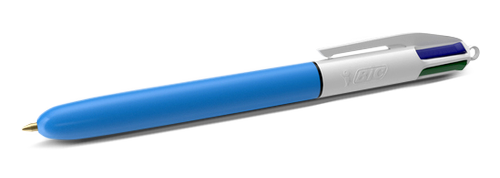
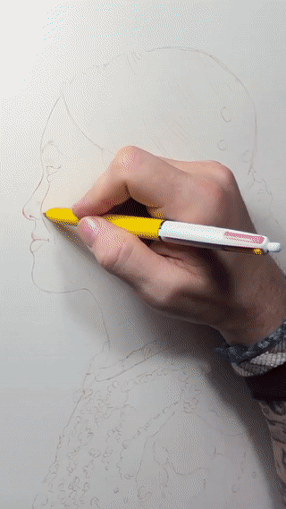
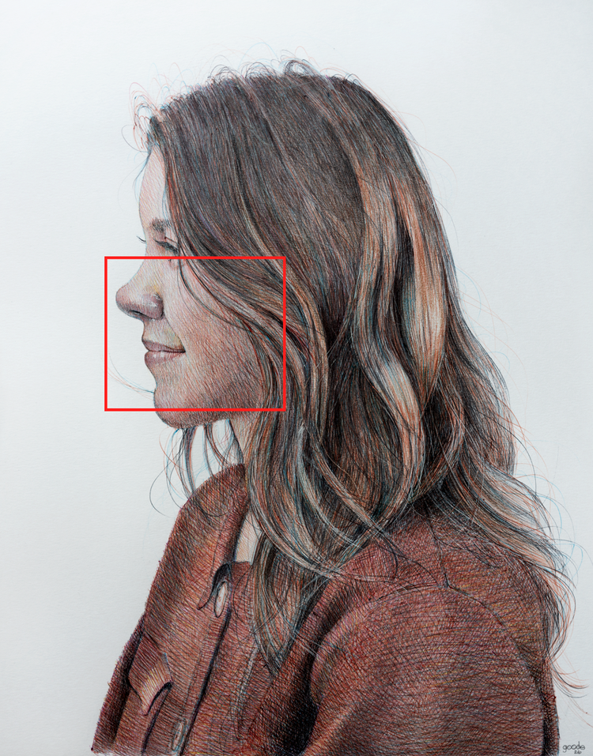
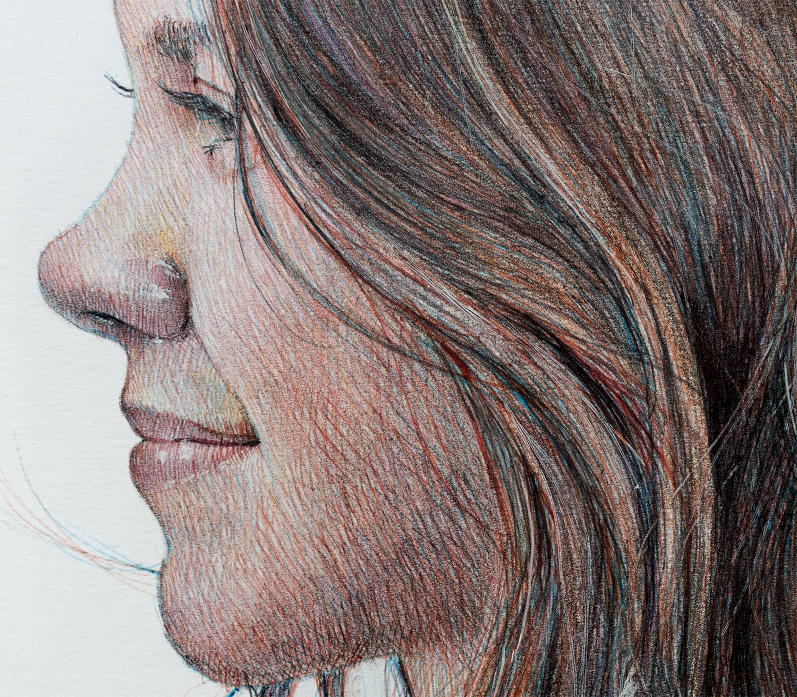
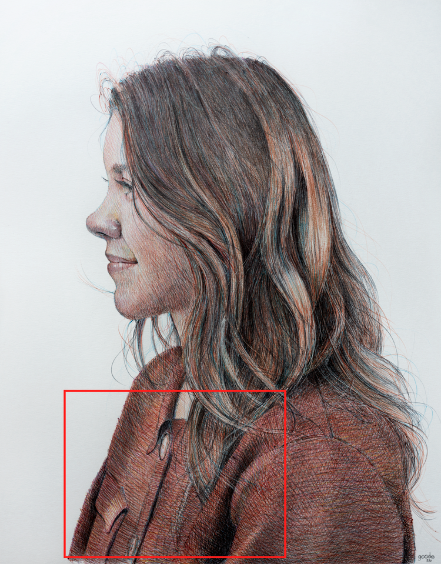
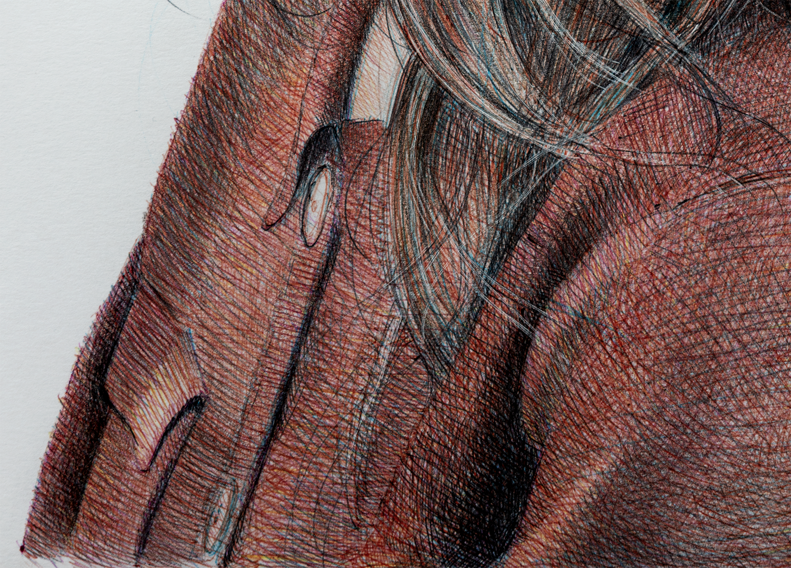
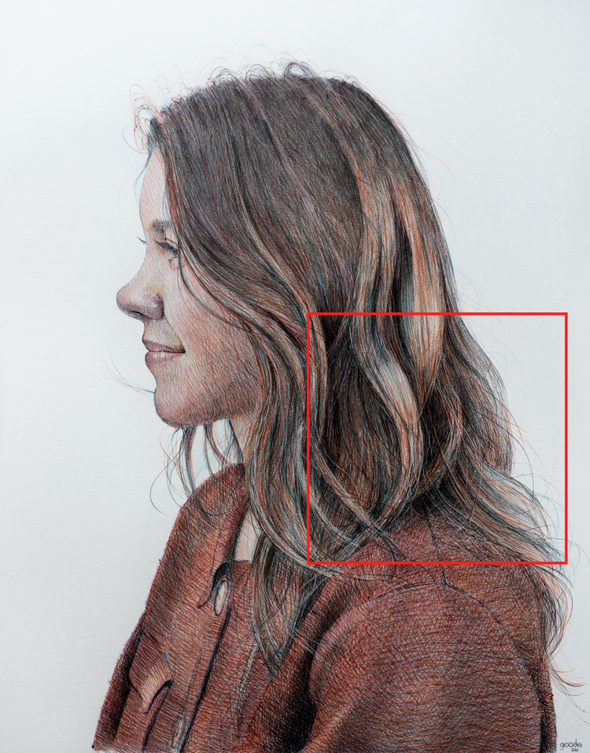
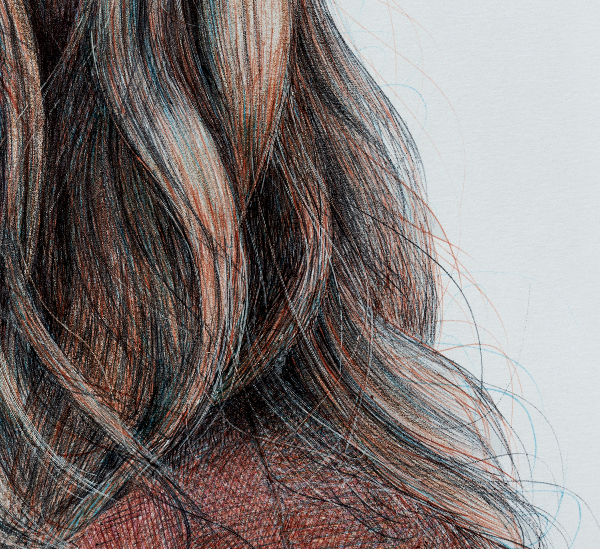

My Method

All of this work is done with a 4 color, BIC ballpoint pen and I'm drawn to the ballpoint pen because it's ordinary and accessible. It's something most people already have within reach, and that removes any sense of preciousness from the tool itself. With no specialized materials or barrier to entry, the process remains open and familiar.
What transforms the drawing isn't the material; it's the sustained attention. Thousands of small, deliberate choices are made slowly over time using the most familiar object possible. There's nothing to hide behind. No erasing. No undo. Each mark is final, and every decision accumulates.
Ballpoint Process
This timelapse compresses hours of slow, deliberate work into a few moments.

The completed work, built slowly over time using a single ballpoint pen.

Details

Skin
Every tone is mixed optically, not on a palette. Layers of crosshatching overlap until the eye does the blending. What looks warm and continuous is actually a web of colored lines.


Clothing
The lines follow the folds, turning flat paper into something with weight and give. Shadows aren't filled in, they're built up, layer by layer, until the material reads as a solid fabric.


Hair
Hair is built from individual lines that follow the actual path of each strand. The warmth comes from red, the depth from black, the cool undertones from blue. Together they make something that moves, even on paper.
